|
|
|
Мамай - коннектинг пипл Вот никого не забуду - всем достанется! Итак, начнем-с : 18-го, четверг, заходили Леха Пестов (Ирк.), Артем Скябас
(Н-ск), Кристина Скуратовская (Ирк.) Ну, главного заводилу на Мамай и главного установщика
на доску вы давно знаете, Леха неоднократно был замечен в пиаре мамайской
целины, многие новички под его руководством вкусили все прелести фрирайда.
И в этот раз Алексей не изменил своим, вызывающим уважение принципам
- впервые на доске гости из соседних городов Артем и Дима (ребятам помог
горнолыжный опыт), закрепляли первые успехи иркутяне Кристина и Саша. Это все было в пятницу и на Мамае, а в это время в Байкальске,
по белому снегу пушистому, практически на халяву катались на бугеле
в гору Соболиную и с нее, но уже на досках, Лешкин, Мари и Катюха. Бугель
мы дружно победили, в этот раз никто с него не падал, а вот трассы оказались
каварнее - замаскированные небольшим слоем пухляка, они были реально
жесткие, местами почти ледяные, нагло сбрасывали наши канты в самый
неподходящий момент, от чего приходилось как новичкам больно падать
на ровном месте. Вот такая вот ратраченая и не ратраченая хрень, простите
за мой французский... Где позитив, где? Везде! Запомнив места беcславных
падений, объезжали их стороной, по краям, где еще оставалось немного
мягкого снега и было много кочек, а также по могулу, где кочек было
еще больше и лучше ! Придумали новый способ заезда на могул - ангарский,
с трассы со всего разгона, желательно в прыжке пролететь через стоящих
внизу в нерешительности лыжников, и дальше прыгая по кочкам скрыться
за поворотом, пока те не успели закрыть рот от удивления. Кто желает
научиться - обращаться к Маринке :) Могул рулит, только пока снега маловато
для полного сщастя! Еще мы убивались в парке, пытаясь закрутить 180
или просто взять грэб. Но тема прыжков с трамплина до конца не раскрыта,
будем работать над этим в будущем, а на сегодня встрехнутой головы и
отбитых поп пожалуй хватит. Да и ноги, несмотря на перерывы с чаем и
шоколадом, стали уже плохо держать организмы на досках, поэтому троица
немного досрочно покинула трассы горнолыжки и двинула отдыхать. Суббота, 20 января, у Марины ДЕНЬ РОЖДЕНЬЯ, у Марины ЮБИЛЕЙ
!!! А вот и зимуха, а вот и люди! Знакомимся с новенькими,
целуемся со старенькими :) Люди в боевой готовности, дуют на Лесной,
а мы кипятим кипяток и едим еду. После легкого обеда и отдыха - бежим
догонять командира и его новобранцев, которые развлекаются январским
загаром и наряжают сноуборд. Ну и катаются-кувыркаются, орлята учатся
летать! Молодцы, одно удовольствие посмотреть и повспоминать себя на
их месте :) 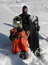 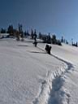 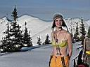 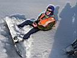 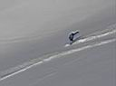 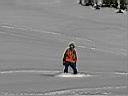 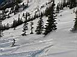 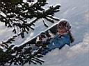
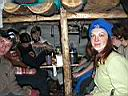 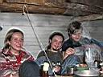 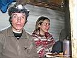 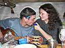 Бал закончен, все устали веселиться, 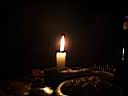 А кто это завел будильник на 8 утра? Что, от него кто-то
проснулся? Это же бесполезное дело, заводить будильники. Как показывает
опыт, встают, разжигают печку, идут за водой и варят завтрак те, кому
не спится, а кто хочет поспать, те и спят. Причем все выходят кататься
примерно в одно и то же время - в 11 часов. Ведь как приятно прогуляться
по утреннему лесу к речке за водой, как приятно чиркнуть спичкой возле
печки и посидеть у закипающего котелка, также приятно и побатонить под
теплым спальником в незабываемом чилл-ауте второго этажа! 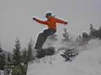 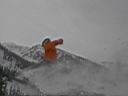 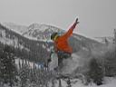 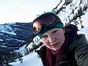 Новобранцы не отстают - прыгают, прыгают и еще раз прыгают! Катюха построила рядом трамплин поменьше и с приземлением в пухляк - вот это супер-мягкие ощущения при экстренной посадке на пятую точку! В следующий раз нароем кочку побольше, обязательно! А пока у нас по плану сбор рюкзаков, уборка помещения и территории, веселый лыжебординг вниз по тропе, чаепитие у бабы Иры и оптовая закупка билетов в электричке. Планам было суждено сбыться и это радует. Усталые и довольные, мы едем мимо только что замерзшего Байкала, готовимся к экзамену по экологии, поем Як-Цуп-Цоп, обмениваемся телефонами, говорим на иностранных языках ... Мы просто едем домой ...
Январь 2007. Белокрылов А. |
Рассказ и Фото
|